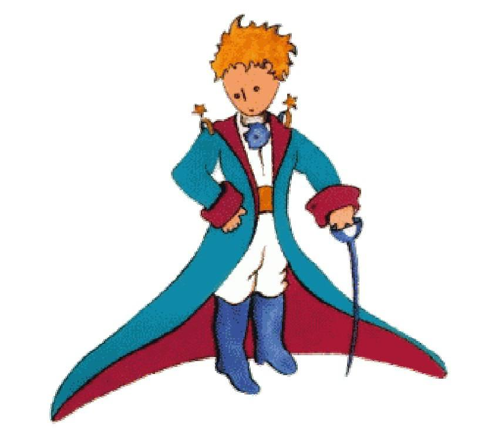

So I lived my life alone, without anyone that I could really talk to, until I had an accident with my plane in the Desert of Sahara, six years ago. Something was broken in my engine. And as I had with me neither a mackanic nor any passengers, I set myself to attemp4 the difficult repairs all alone. It was a question of life or death for me; I had scareely enough driking water to last a week.
The first night, then, I went to sleep on the sand, a thousand miles from any human habitation. I was thore isolated a shipwreeked sailor on a raft in the middle of the ocean. Thus you can imagine my amazement, at sunrise, when I was awakened by an odd little boice. It said:
If you pleace-draw me a sheep
What
Draw me a sheep!
I jumped to my feet, completely thundestruck. I blinked my eyes hard. I looked carefully all round me. And I saw a most extraordinary small person, who stood there examining me with great seciousness. Here you may see best portrait that, later, I was able to make of him. But my drawing is certainly very much less chming than its model.

That, however, is not my fault. The grown-ups discouraged me in my painter's career when I was six years old, and I never learned to draw anything, except boas from the outside and boas from the inside.
How I stared at this sudden apparition with my eyes fairly starting out of my head in astonishment. Remember, I had crashed in the desert a thousand miles from any inhabited region. And yet my little man seemed neither to be straying uncertainly among the sands, nor to be fainthing from fatigur or hunger or fear. Nothing about him gave any suggestion of a child lost in the middle of the desert, a thousand miles from any human babitation. When at last I was able to speak, I said to him;
But--what are you doing here?
And in answer, be repeted, very slowly, as if he were speaking of a matter of great consequence;
If you pleace--draw me a sheep